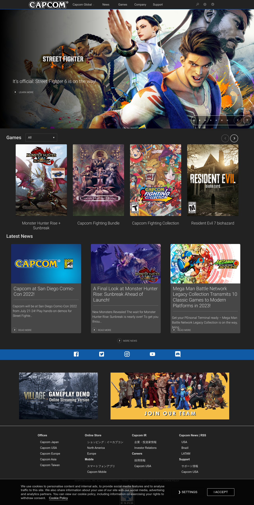

← | Capcom Website
Esta página es una de las elegidas debido a la diagramación y presentación de los elementos mostrados en ella, además de estar muy ligada al tema del cual tratará mi portada de la página web, pues muestra los juegos de esta y estos links que se encuentran dirigen a aquellas páginas relacionadas con los juegos. Una contraparte es el Lighthouse en el cual los puntajes no son muy altos, pues el de mayor puntaje es de 67 en las recomendaciones y los otros como el SEO o la accesibilidad no superan un puntaje de 66.
Según el reporte de lighthouse esta página web tiene bastantes aspectos que se podrían mejorar, como el tamaño de las imagenes utilizadas y los formatos de estas mismas, además de la reducción de código CSS. Otra cosa el el orden de los elementos del encabezado que no se encuentran en el correcto orden.
Otros antecedentes

Grand Theft Auto Website

Call of Duty Warzone Website